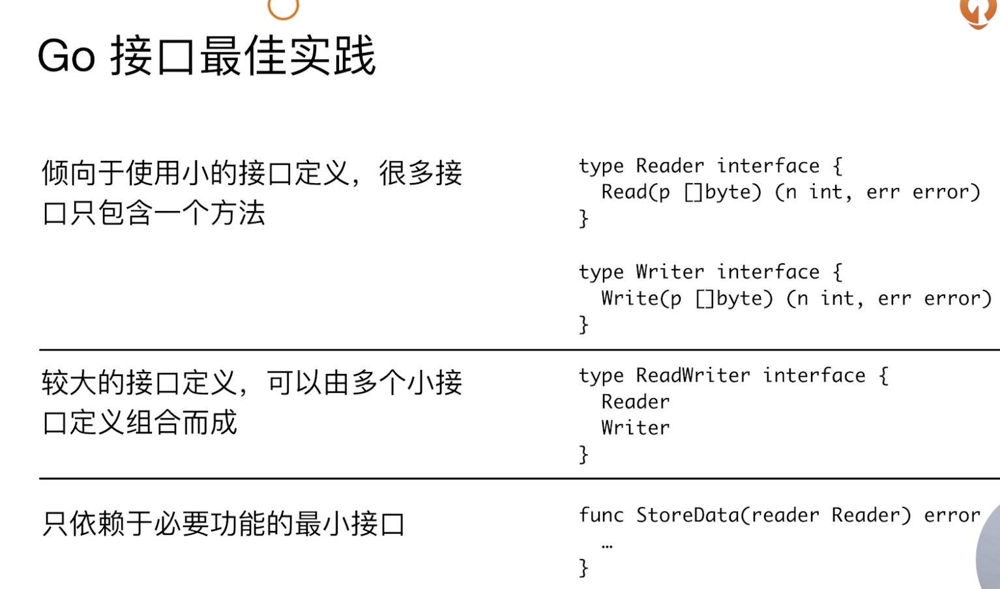

接口差异
- 接口为非入侵性，实现不依赖于接口定义
- 所以接口的定义可以包含在接口使用者包内
type IntConv func(op int) int
func timeSpent(inner IntConv) IntConv {
return func(n int) int {
start := time.Now()
ret := inner(n)
fmt.Println("time spent:", time.Since(start).Seconds())
return ret
}
}
func slowFun(op int) int {
time.Sleep(time.Second * 1)
return op
}
func TestFn(t *testing.T) {
tsSF := timeSpent(slowFun)
t.Log(tsSF(10))
}
扩展和复用
func TestDog(t *testing.T) {
var dog *Dog = new(Dog)
var p = *Pet(dog)
p.SpeakTo("CHao")
dog := new(Dog)
dog.SpeakTo("Chao")
}
go多态
func writeFirstProgram(p Programmer) {
fmt.Printf("%T %v\n", p, p.WriteHelloWorld())
}
p必须传指针才能实现多态
空接口断言
func DoSomething(p interface{}) {
if i, ok := p.(int); ok {
fmt.Println("Integer", i)
return
}
// if s, ok := p.(string); ok {
// fmt.Println("stirng", s)
// return
// }
// fmt.Println("Unknow Type")
switch v := p.(type) {
case int:
fmt.Println("Integer", v)
case string:
fmt.Println("String", v)
default:
fmt.Println("Unknow Type")
}
}
接口实践
